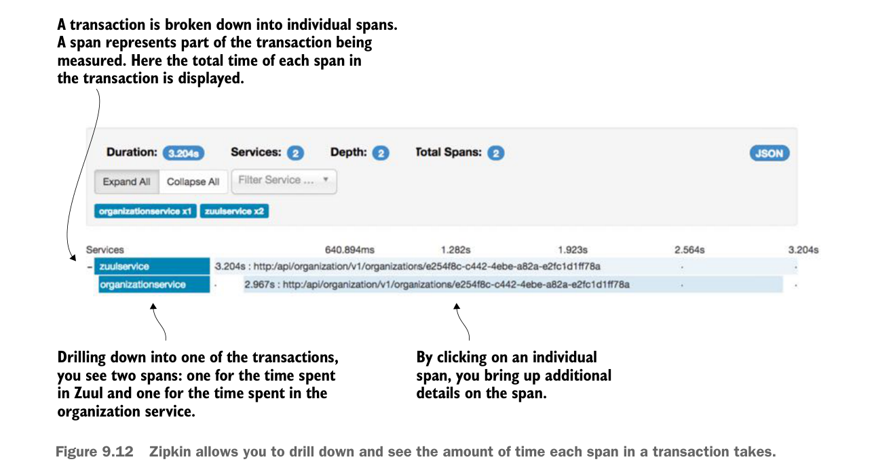

The two calls to the organization service through Zuul took 3.204 seconds and 77.2365 milliseconds respectively. Because you queried on the organization service calls (and not the Zuul gateway calls), you can see that the organization service took 92% and 72% of the total amount of time of the transaction time.
Let’s dig into the details of the longest running call (3.204 seconds). You can see more detail by clicking on the transaction and drilling into the details. Figure 9.12 shows the details after you’ve clicked to drill down into further details.
A transaction is broken down into individual spans. A span represents part of the transaction being measured. Here the total time of each span in the transaction is displayed.

Drilling down into one of the transactions, you see two spans: one for the time spent in Zuul and one for the time spent in the organization service.
By clicking on an individual span, you bring up additional details on the span.
Zipkin allows you to drill down and see the amount of time each span in a transaction takes.
In figure 9.12 you can see that the entire transaction from a Zuul perspective took approximately 3.204 seconds. However, the organization service call made by Zuul took 2.967 seconds of the 3.204 seconds involved in the overall call. Each span presented can be drilled down into for even more detail. Click on the organization-service span and see what additional details can be seen from the call. Figure 9.13 shows the detail of this call.
One of the most valuable pieces of information in figure 9.13 is the breakdown of when the client (Zuul) called the organization service, when the organization service received the call, and when the organization service responded back. This type of timing information is invaluable in detecting and identifying network latency issues.